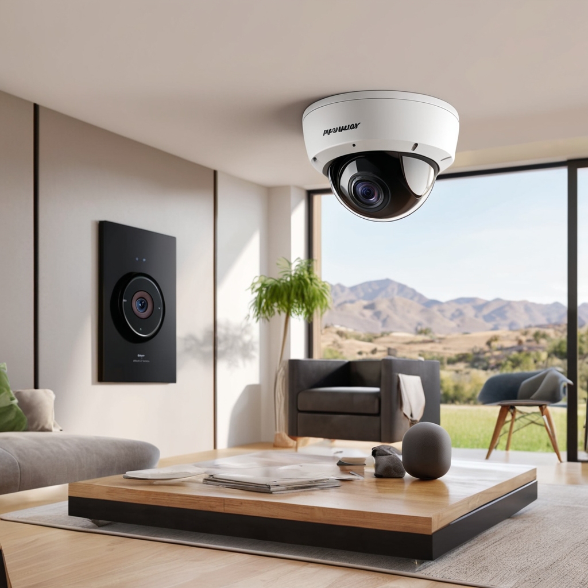
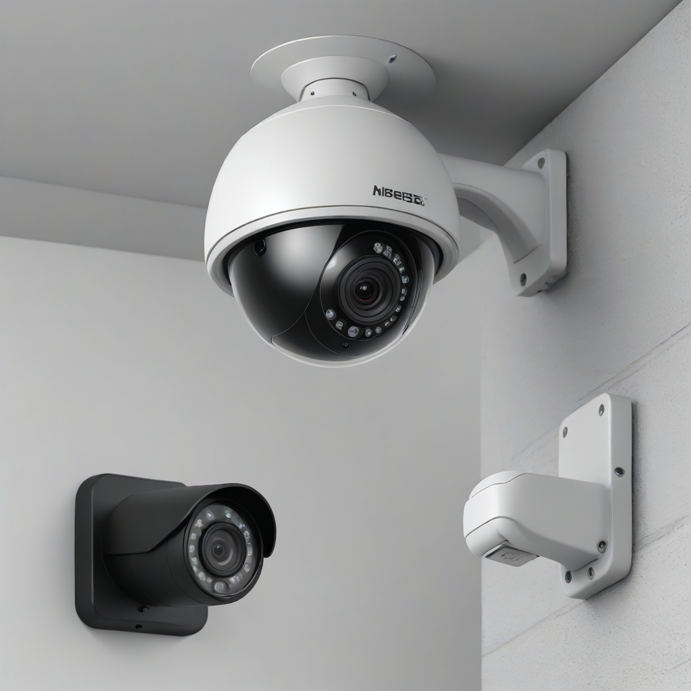
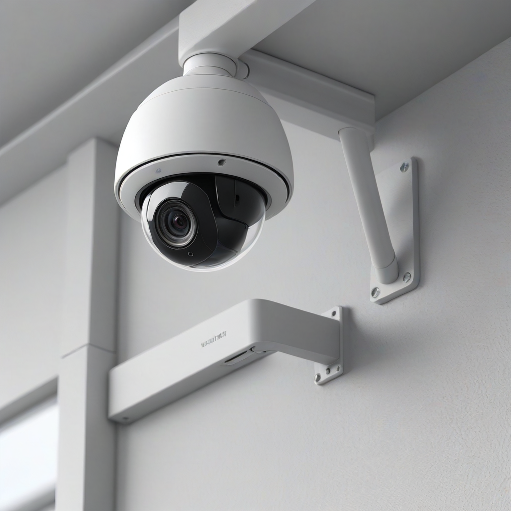

In the evolving landscape of home protection, wireless security cameras have become the cornerstone of modern DIY home security installation. By 2026, the technology has matured significantly, offering high-definition video, advanced AI detection, and seamless smartphone integration without the mess of running cables through walls. For homeowners and renters alike, the ability to monitor property entry points, common areas, and vulnerable spots provides an invaluable layer of peace of mind. However, the market is saturated with options, ranging from basic doorbell cameras to sophisticated outdoor surveillance systems, making the selection and setup process critical for actual safety.
Many consumers underestimate the complexity of wireless security camera setup, assuming that "wireless" means "plug and play." While the hardware is easier to handle than wired systems, a poorly planned installation can lead to blind spots, constant battery drainage, or a weak connection that fails when you need it most. A successful installation requires strategic planning regarding power, network range, and placement angles. This guide cuts through the marketing noise to provide a practical, step-by-step approach to securing your property effectively.
Safety is not just about having a camera; it is about having a camera that works reliably during an incident. Whether you are concerned about package theft, monitoring elderly relatives, or deterring intruders, the right configuration makes all the difference. In this comprehensive guide, we will walk you through how to install wireless security cameras, evaluate the best hardware for your budget, and optimize your network for uninterrupted performance. We prioritize safety, practicality, and long-term reliability over flashy features that often end up unused.
Assessing Your Security Needs and Budget

Before purchasing a single device, you must conduct a thorough assessment of your property. The most common mistake in DIY home security installation is buying hardware before understanding the environment. Start by identifying the specific risks you are trying to mitigate. Are you worried about front door deliveries, backyard pet monitoring, or perimeter security? Each scenario requires a different type of camera with specific features.
Budget is also a primary constraint. In 2026, you can find capable entry-level cameras for under $50, but professional-grade systems with local storage and advanced AI can cost upwards of $200 per unit. You must also consider ongoing costs. Many wireless cameras require a monthly subscription for cloud storage, motion alerts, and person detection. If you prefer to avoid recurring fees, look for systems that support local storage via SD cards or a home hub base station. This distinction is vital for long-term budget management.
Consider the power source options available in 2026 technology:
- Battery-Powered: Ideal for renters or areas without power outlets. These offer maximum flexibility but require periodic charging or replacement. Look for rechargeable lithium-ion batteries that last 3 to 6 months.
- Wired Wireless (Plug-in): These connect to Wi-Fi but draw power from an outlet. They offer continuous power and recording capabilities without battery anxiety, though they limit placement options.
- Solar-Assisted: A hybrid option where a small solar panel keeps the battery topped up. This is excellent for outdoor placement in sunny climates, reducing the maintenance burden significantly.
Additionally, verify compatibility with your existing smart home ecosystem. If you use Amazon Alexa or Google Home, ensure the camera supports voice control and integration. In 2026, the Matter protocol is gaining traction, of

Selecting the Right Hardware
Choosing the right camera is the first technical step in how to install wireless security cameras successfully. The market is dominated by a few key players, each with distinct strengths. Below is a comparison of top-rated models available in 2026 to help you decide which fits your needs. We have selected these based on video quality, battery life, and ease of installation.
| Model | Best For | Power Source | Video Quality | Approx. Price |
|---|---|---|---|---|
| Ring Stick Up Cam Battery | General Home Monitoring | Battery / Plug-in | 1080p HD | $99.99 |
| Arlo Pro 5S | High-End Outdoor Security | Battery / Solar | 4K HDR + Color Night Vision | $199.99 |
| Eufy SoloCam S340 | 360° Pan & Tilt Coverage | Solar / Battery | 2K with AI Tracking | $149.99 |
| Blink Outdoor 4 | Budget & Renters | Battery (AA) | 1080p HD | $99.99 |
When selecting hardware, pay close attention to the field of view (FOV). A wide-angle lens (130° to 160°) is generally preferred for entryways to capture the sidewalk and door frame. For driveways or large yards, cameras with 2K or 4K resolution are necessary to identify license plates or facial features from a distance. However, higher resolution consumes more battery power. If you are using battery cameras in low-light areas, ensure they have color night vision capabilities, as standard infrared monochrome video often fails to capture license plate colors.
Storage is another critical hardware decision. Cloud storage provides off-site safety if the camera is stolen, but local storage is more private and cost-effective in the long run. Check if the camera supports microSD cards or if you need to purchase a separate hub for local recording. Some modern 2026 models offer "hybrid storage," allowing you to save locally while keeping short clips in the cloud for backup. This balance ensures you have footage even if your internet connection goes down temporarily.
Step-by-Step Installation Guide
Once you have your equipment, the physical installation begins. Following a structured process ensures you do not waste time or damage your property. Here is the definitive guide on how to install wireless security cameras efficiently.
1. Prepare the Mounting Location
Before drilling any holes, use your smartphone to preview the view. Hold the camera in place and check the live feed on the app. Ensure the angle captures the threat zone without being obstructed by trees, blinds, or light fixtures. Avoid pointing cameras directly at bright light sources, as this causes lens flare and reduces night vision effectiveness. Mark the screw holes with a pencil once you are satisfied with the angle.
2. Gather Your Tools
Ensure you have the necessary tools before starting. Most installations require:
- Power drill with appropriate drill bits
- Screwdriver (Phillips head usually)
- Level (to ensure the camera is straight)
- Stud finder (for mounting on siding or drywall)
- Extension cord (for testing power if needed)
3. Connect to Power and Wi-Fi
For battery cameras, insert the charged battery before mounting. For plug-in models, ensure the outlet is accessible. Download the manufacturer's app and create an account. Put the camera into pairing mode (usually by scanning a QR code on the device or pressing a reset button). Connect the camera to your 2.4GHz Wi-Fi network. Note that many security cameras do not support 5GHz bands due to range issues. Ensure your router is broadcasting a strong signal at the installation point.
4. Mount the Camera Securely
Drill pilot holes to prevent damage to siding or brick. If mounting on brick or stucco, use masonry bits and appropriate anchors. For wood siding, standard anchors are sufficient. Use weather-resistant screws provided in the kit. Apply a silicone sealant around the base if the camera is not weatherproofed to prevent water intrusion, which is a common cause of hardware failure. Ensure the cable management clips are used to hide any power cords.
5. Configure Motion Zones
Once mounted and connected, log into the app to configure detection zones. Set custom motion areas to ignore busy streets or swaying trees. This reduces false alerts and conserves battery life. Enable "person detection" if available to avoid alerts triggered by animals or shadows.
Optimization and Placement Strategies
Proper placement is just as important as the installation hardware. Knowing the best places to mount wireless cameras maximizes their effectiveness and legal compliance.
Height and Angle
Mount cameras between 8 and 10 feet high. This height places the camera out of easy reach from the ground, preventing tampering or theft, while still capturing clear facial recognition. If mounted too high, you will only see the tops of heads. If too low, the camera is vulnerable to vandalism. Angle the camera downward slightly to capture the entry point rather than the sky.
Wi-Fi Signal Strength
Before finalizing the mount, perform a wireless camera wifi range test. Walk to the installation spot with your phone. If your phone struggles to load the internet, the camera will likely disconnect frequently. If the signal is weak, consider using a Wi-Fi extender or a mesh network node closer to the camera. In 2026, many routers support "Smart Connect," but separating the 2.4GHz band often yields better stability for IoT devices like cameras.
Privacy and Legal Considerations
Be mindful of your neighbors' privacy. Do not point cameras into their windows or yards. In many jurisdictions, recording audio without consent is illegal. Check your local laws regarding two-party consent for audio recording. Many cameras allow you to disable the microphone in the settings to remain compliant. Additionally, be aware of HOA rules, as some communities have restrictions on exterior modifications or visible security equipment.
For renters, look for renter friendly security cameras that use adhesive mounts or tension rods. Avoid drilling permanent holes if possible. Many modern cameras come with strong 3M adhesive strips that hold the weight securely without damaging the siding. If you must drill, keep the screws and anchors so you can patch the holes upon moving out.
Troubleshooting Common Issues
Even with a perfect installation, issues can arise. Addressing them quickly ensures your system remains reliable.
- Camera Offline: This is usually a Wi-Fi issue. Check your router logs. Reboot the camera and the router. If the issue persists, move the camera closer to the router to test signal strength.
- False Motion Alerts: Adjust the sensitivity settings in the app. Narrow the motion detection zones to exclude moving leaves or passing cars.
- Battery Draining Fast: High traffic areas trigger the camera constantly. Lower the recording frequency or enable "Smart Motion" to only record when a person is detected. Check for freezing temperatures, which degrade battery performance.
- Poor Night Vision: Ensure no lights are shining directly into the lens. Clean the lens with a microfiber cloth. Check for dirt or spider webs on the lens, which scatter the infrared light.
Regular maintenance is key. Check the camera's status in the app once a month. Clean the lens every three months. If the system is battery-powered, ensure you charge the batteries before they drop below 20% to prevent deep discharge cycles that shorten battery lifespan.
Frequently Asked Questions
Homeowners often have specific concerns regarding security setups. Here are answers to the most common questions we receive.
Can I install wireless cameras if I rent an apartment?
Yes, absolutely. There are many renter friendly security cameras designed specifically for this purpose. Look for models that use strong adhesive strips or magnetic mounts that do not require drilling. Indoor cameras are generally accepted as personal property, but always check your lease agreement regarding exterior modifications. Some landlords require permission before drilling holes in the siding. Adhesive mounts allow you to remove the camera without leaving damage, protecting your security deposit.
Do wireless cameras work without Wi-Fi?
Most standard wireless cameras require Wi-Fi to send alerts and stream video to your phone. However, some systems, like the Eufy or Reolink ecosystem, allow for local storage on a base station. If you have internet outages, these cameras may still record locally to an SD card or hub, but you won't be able to view the footage remotely until the connection is restored. Always have a backup plan for internet failure.
How far can a wireless security camera reach?
The range depends heavily on your router. A strong Wi-Fi signal typically reaches 150 feet indoors and 300 feet outdoors in open spaces. Walls, metal siding, and trees significantly reduce this range. To find out your specific range, perform a wireless camera wifi range test using a Wi-Fi analyzer app on your phone. If the camera is too far, consider a Wi-Fi extender or a PoE (Power over Ethernet) switch if you can run a single network cable.
Is it legal to record audio with my security camera?
Laws vary by state and country. In the United States, some states require two-party consent for audio recording, meaning everyone being recorded must agree. To stay safe, disable the microphone feature in your camera app settings. Video recording for security purposes on your own property is generally legal, but you cannot record into your neighbor's private space. Always prioritize privacy to avoid legal disputes.
How do I protect my security camera from being hacked?
Security is paramount. Change the default password on your camera immediately. Enable Two-Factor Authentication (2FA) on your account. Keep the camera firmware updated to patch security vulnerabilities. Do not expose your camera to the public internet unless necessary; use a secure cloud connection provided by the manufacturer. If possible, set up a guest network on your router specifically for IoT devices to isolate them from your main computers and phones.
Conclusion
Installing a wireless security system is one of the most effective ways to modernize your home safety strategy. By understanding how to install wireless security cameras properly, you ensure that your investment provides genuine protection rather than just a false sense of security. Remember that the best camera is the one that is installed correctly, maintained regularly, and positioned to cover your specific vulnerabilities.
Start by assessing your needs, choosing hardware that fits your budget and power situation, and planning your Wi-Fi coverage carefully. Whether you are a homeowner or a renter looking for renter friendly security cameras, the principles of placement, power, and privacy remain the same. Regularly test your system and update your settings as technology evolves. Your home security is a living system that requires attention, but with the right setup, it provides invaluable peace of mind for you and your family.
Take action today by auditing your home's entry points and mapping out your coverage. Don't wait for an incident to happen before you secure your property. For more detailed guides on specific brands or advanced network security, visit our other resources on comprehensive home security systems and in-depth camera reviews. Stay safe, stay informed, and keep your home protected.